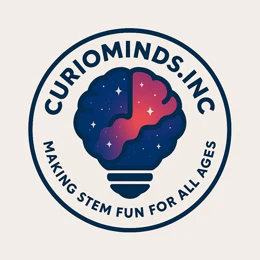

Physics
Chemistry
Biology
Earth Science
Astronomy
Beyond the Syllabus
No sim for that yet.
Try a different word or clear the filters, or tell me which topic you need and I may build it.

59 free sims · no loginWhere concepts click.
Free interactive simulations for Singapore secondary classrooms — science first, plus life skills beyond the syllabus. Aligned to the MOE syllabus. No login, no install — open one mid-lesson in any browser.
No sim for that yet.
Try a different word or clear the filters, or tell me which topic you need and I may build it.